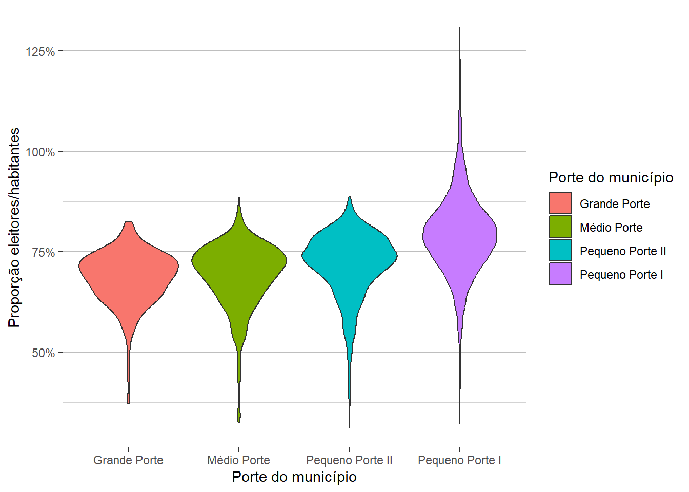
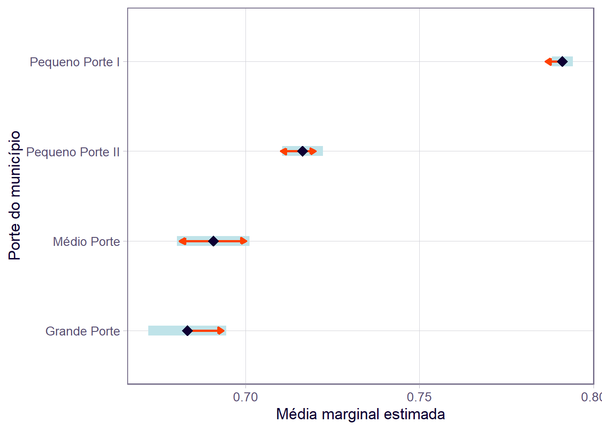

Mostrar o código
rm(list=ls())rm(list=ls())Objetos removidos da memória.
options(scipen=999)Notação científica desabilitada.
library(censobr)
library(geobr)
library(tidyverse)
library(dplyr)
library(stringi)
library(ggplot2)
library(flextable)
library(officer)
library(gdtools)
library(car)
library(report)
library(emmeans)Bibliotecas necessárias carregadas.
Fonte dos dados: IBGE, via pacotes {censobr} e {geobr}.
tryCatch(
pop_br <- censobr::read_population(
year = 2010,
showProgress = FALSE
),
error = function(e){
if (is.null(geo_mun)) {
cat("Dados de população dos municípios não carregados.")
}
},
finally = {
if (!is.null(pop_br)) {
n_col <- ncol(pop_br)
n_lin <- nrow(pop_br)
# Descomente a linha abaixo caso queira ver um resumo de todas as variáveis
#dplyr::glimpse(geo_mun)
}
}
)Foram carregadas 20635472 linhas e 251 colunas.
pop_mun <- pop_br |>
compute() |>
group_by(code_region, name_region, abbrev_state, code_muni) |>
summarize(pop = sum(V0010) ) |> # V0010 = população
collect()
n_col <- ncol(pop_mun)
n_lin <- nrow(pop_mun)
# Descomente a linha abaixo caso queira ver um resumo de todas as variáveis
#dplyr::glimpse(pop_mun)Foram carregadas 5565 linhas e 5 colunas.
tryCatch(
geo_mun <- geobr::read_municipality(
year = 2010,
simplified = TRUE,
showProgress = FALSE
),
error = function(e){
if (is.null(geo_mun)) {
cat("Dados complementares de municípios não carregados.")
}
},
finally = {
if (!is.null(geo_mun)) {
n_col <- ncol(geo_mun)
n_lin <- nrow(geo_mun)
# Descomente a linha abaixo caso queira ver um resumo de todas as variáveis
#dplyr::glimpse(geo_mun)
}
}
)Foram carregadas 5565 linhas e 9 colunas.
Bastaria fazer o cruzamento pela variável “code_muni”; no entanto, usei também a variável “abrev_state” para evitar duplicidade de colunas no dataframe gerado.
pop_mun <- left_join(
pop_mun, geo_mun,
by = join_by(
abbrev_state == abbrev_state,
code_muni == code_muni))
n_col <- ncol(pop_mun)
n_lin <- nrow(pop_mun)
# Descomente a linha abaixo caso queira ver um resumo de todas as variáveis
#dplyr::glimpse(pop_mun)Foram carregadas 5565 linhas e 12 colunas.
Fonte dos dados: portal do TSE.
url_eleitorado_2010 <- "https://cdn.tse.jus.br/estatistica/sead/odsele/perfil_eleitorado/perfil_eleitorado_2010.zip"
tryCatch(
downloader::download(url_eleitorado_2010, "arq_eleitorado_2010.zip", mode = "wb"),
error = function(e){
cat("Dados de eleitorado por município não carregados.")
},
finally = {
unzip("arq_eleitorado_2010.zip")
eleit_br_inicial <- read.csv(
"perfil_eleitorado_2010.csv",
fileEncoding = "ISO-8859-1",
sep = ";")
if (!is.null(eleit_br_inicial)) {
n_col <- ncol(eleit_br_inicial)
n_lin <- nrow(eleit_br_inicial)
# Descomente a linha abaixo caso queira ver um resumo de todas as variáveis
#dplyr::glimpse(geo_mun)
}
}
)Foram carregadas 3854560 linhas e 28 colunas.
eleit_br <- eleit_br_inicial |>
select(ANO_ELEICAO, SG_UF, CD_MUNICIPIO, NM_MUNICIPIO, QT_ELEITORES_PERFIL) |>
rename(
ano_eleicao = ANO_ELEICAO,
sg_uf = SG_UF,
cd_municipio_tse = CD_MUNICIPIO,
nm_municipio_tse = NM_MUNICIPIO) |>
group_by(ano_eleicao, sg_uf, cd_municipio_tse, nm_municipio_tse) |>
summarise(qt_eleitores_mun = sum(QT_ELEITORES_PERFIL))
n_col <- ncol(eleit_br)
n_lin <- nrow(eleit_br)
# Descomente a linha abaixo caso queira ver um resumo de todas as variáveis
#dplyr::glimpse(eleit_br)Foram carregadas 5722 linhas e 5 colunas.
pop_mun <- pop_mun |>
mutate(name_muni = toupper(name_muni))
n_col <- ncol(pop_mun)
n_lin <- nrow(pop_mun)Foram convertidas 5565 linhas e 12 colunas.
pop_eleit_mun <- pop_mun |>
inner_join(
eleit_br,
by = join_by(
abbrev_state == sg_uf,
name_muni == nm_municipio_tse))
n_col <- ncol(pop_eleit_mun)
n_lin <- nrow(pop_eleit_mun)Foram cruzadas 5510 linhas e 15 colunas.
compara_datasets <- function(df_pop, df_eleit,
uf_pop, uf_eleit,
mun_pop, mun_eleit) {
df_mun_nao_correspondentes <- tibble()
if (nrow(df_pop) == nrow(df_eleit)) {
print("Todos os municípios foram localizados.")
} else {
df_mun_nao_correspondentes <- df_pop %>%
anti_join(df_eleit,
by = join_by({{uf_pop}} == {{uf_eleit}},
{{mun_pop}} == {{mun_eleit}}))
cat(sprintf("Há %d municípios sem correspondência.",
nrow(df_mun_nao_correspondentes)))
}
return(df_mun_nao_correspondentes)
}df_mun_nao_correspondentes <- compara_datasets(
pop_mun, pop_eleit_mun,
abbrev_state, abbrev_state,
name_muni, name_muni)Há 55 municípios sem correspondência.df_mun_nao_correspondentes[, c("abbrev_state", "name_muni")]# A tibble: 55 × 2
# Groups: abbrev_state [18]
abbrev_state name_muni
<chr> <chr>
1 RO ALTA FLORESTA D'OESTE
2 RO ESPIGÃO D'OESTE
3 RO MACHADINHO D'OESTE
4 RO NOVA BRASILÂNDIA D'OESTE
5 RO SANTA LUZIA D'OESTE
6 RO ALVORADA D'OESTE
7 RO SÃO FELIPE D'OESTE
8 AP PEDRA BRANCA DO AMAPARI
9 TO COUTO MAGALHÃES
10 TO SÃO VALÉRIO
# ℹ 45 more rowsn_mun_nao_correspondentes <- nrow(df_mun_nao_correspondentes)Há 55 municípios na base do IBGE sem correspondência com a base do TSE.
pop_mun <- pop_mun |>
mutate(nm_mun_ibge_tran = stri_trans_general(name_muni, "Latin-ASCII"))
eleit_br <- eleit_br |>
mutate(nm_mun_tse_tran = stri_trans_general(nm_municipio_tse, "Latin-ASCII"))pop_eleit_mun <- pop_mun |>
inner_join(
eleit_br,
by = join_by(
abbrev_state == sg_uf,
nm_mun_ibge_tran == nm_mun_tse_tran))
df_mun_nao_correspondentes <- compara_datasets(
pop_mun, pop_eleit_mun,
abbrev_state, abbrev_state,
nm_mun_ibge_tran, nm_mun_ibge_tran)Há 37 municípios sem correspondência.df_mun_nao_correspondentes[, c("abbrev_state", "nm_mun_ibge_tran")]# A tibble: 37 × 2
# Groups: abbrev_state [14]
abbrev_state nm_mun_ibge_tran
<chr> <chr>
1 RO ALTA FLORESTA D'OESTE
2 RO ESPIGAO D'OESTE
3 RO MACHADINHO D'OESTE
4 RO NOVA BRASILANDIA D'OESTE
5 RO SANTA LUZIA D'OESTE
6 RO ALVORADA D'OESTE
7 RO SAO FELIPE D'OESTE
8 AP PEDRA BRANCA DO AMAPARI
9 TO COUTO MAGALHAES
10 TO SAO VALERIO
# ℹ 27 more rowsn_mun_nao_correspondentes <- nrow(df_mun_nao_correspondentes)Após a transliteração, restam 37 municípios na base do IBGE sem correspondência com a base do TSE.
pop_eleit_mun <- pop_eleit_mun |>
mutate(pr_eleit = qt_eleitores_mun / pop)pop_eleit_mun <- pop_eleit_mun |>
mutate(tp_porte_mun = case_when(
pop <= 20000 ~ "Pequeno Porte I",
pop >= 20001 & pop <= 50000 ~ "Pequeno Porte II",
pop >= 50001 & pop <= 100000 ~ "Médio Porte",
pop >= 100001 ~ "Grande Porte")) |>
mutate(tp_porte_mun = fct_reorder(tp_porte_mun,
pop,
.fun = "length"))summary(pop_eleit_mun$pr_eleit) Min. 1st Qu. Median Mean 3rd Qu. Max.
0.3122 0.7085 0.7657 0.7657 0.8212 1.3078 set_flextable_defaults(
font.size = 10,
padding = 6)tab_1 <- pop_eleit_mun |>
group_by(tp_porte_mun) |>
summarise(n_mun = as.numeric(n_distinct(code_muni)))
total_mun <- sum(tab_1$n_mun)
tab_1 <- tab_1 |>
as_flextable() |>
set_header_labels(
tab_1,
tp_porte_mun = "Porte do município",
n_mun = "Nº de municípios")
tab_1 <- tab_1 |>
add_footer_row(
values = c("Total", format(total_mun, big.mark = ".")),
colwidths = c(1, 1)) %>%
align(i = NULL, j = 2, align = "right", part = "footer")
tab_1 <- tab_1 |>
colformat_num(
j = c("n_mun"),
decimal.mark = ",", # separador de decimal
big.mark = ".", # separador de milhar
digits = 0
)
tab_1 <- tab_1 |>
bg(bg = "white", part = "body")
tab_1 <- delete_rows(tab_1, i = 1, part = "header")
tab_1 <- delete_rows(tab_1, i = 2, part = "footer")tab_1Porte do município | Nº de municípios |
|---|---|
Grande Porte | 283 |
Médio Porte | 322 |
Pequeno Porte II | 1.037 |
Pequeno Porte I | 3.886 |
Total | 5.528 |
Exporta tabela 1 para formato RTF. O arquivo é gravado na pasta output.
Caso a tabela vier com problemas de formatação, geralmenta basta aumentar a largura das colunas manualmente.
tab_1 <- width(tab_1, width = 2.5, unit = "cm")
nm_arq <- "output/tab_1.rtf"
save_as_rtf(x = tab_1, path = nm_arq)Tabela 1 gravada em output/tab_1.rtf.
fig_1 <- ggplot(pop_eleit_mun,
aes(x = tp_porte_mun, y = pr_eleit, fill = tp_porte_mun)) +
geom_violin() +
labs(
x = "Porte do município",
y = "Proporção eleitores/habitantes",
fill = "Porte do município") +
scale_y_continuous(labels = scales::percent_format(scale = 100)) +
theme(plot.background = element_blank(),
panel.background = element_rect(fill = 'white'),
panel.grid.major.x = element_blank(),
panel.grid.minor.x = element_blank(),
panel.grid.major.y = element_line(colour = 'gray'),
panel.grid.minor.y = element_line(colour = 'lightgray'))fig_1
nm_arq <- "output/fig_1.png"
ggsave(nm_arq, width = 20, height = 20, units = "cm")Figura 1 gravada em output/fig_1.png.
tab_2 <- pop_eleit_mun |>
group_by(tp_porte_mun) |>
summarise(
n_prop_acima_de_80 = n_distinct(code_muni[pr_eleit > 0.8]),
n_prop_acima_de_90 = n_distinct(code_muni[pr_eleit > 0.9]),
n_prop_acima_de_100 = n_distinct(code_muni[pr_eleit > 1.0])) |>
as_flextable()
tab_2 <- set_header_labels(
tab_2,
tp_porte_mun = "Porte do município",
n_prop_acima_de_80 = "Acima de 80% de proporção",
n_prop_acima_de_90 = "Acima de 90% de proporção",
n_prop_acima_de_100 = "Acima de 100% de proporção")
tab_2 <- delete_rows(tab_2, i = 1, part = "header")
tab_2 <- delete_rows(tab_2, part = "footer")tab_2Porte do município | Acima de 80% de proporção | Acima de 90% de proporção | Acima de 100% de proporção |
|---|---|---|---|
Grande Porte | 5 | 0 | 0 |
Médio Porte | 9 | 0 | 0 |
Pequeno Porte II | 110 | 0 | 0 |
Pequeno Porte I | 1,741 | 429 | 110 |
Caso a tabela vier com problemas de formatação, geralmenta basta aumentar a largura das colunas manualmente.
tab_2 <- width(tab_2, width = 2.5, unit = "cm")
nm_arq <- "output/tab_2.rtf"
save_as_rtf(x = tab_2, path = nm_arq)Tabela 2 gravada em output/tab_2.rtf.
Visualmente, há uma diferença entre os grupos no que se refere ao percentual de eleitores por habitante. Municípios de menor porte tendem a ter um percentual maior. Mas será que essa diferença é estatisticamente significativa? Para investigar essa hipótese, iremos usar um teste do tipo ANOVA one-way (ou seja, com apenas um fator explicativo).
No entanto, temos que tomar cuidado porque os grupos são desbalanceados, isto é, possuem tamanhos diferentes. De fato, há muito mais municípios de menor porte do que porte médio ou grande. Nesse caso, é necessário usar um teste ANOVA específico, com a soma de quadrados tipo II ou III. Nesse trabalho, usaremos o tipo II (*).
(*) Para entender mais sobre ANOVA e seus tipos específicos, consultar: https://nathanieldphillips-yarrr.share.connect.posit.cloud/anova.html
porte_municipio_modelo <- lm(pr_eleit ~ tp_porte_mun, data = pop_eleit_mun)
porte_municipio_anova <- car::Anova(porte_municipio_modelo, type = 2)
report(porte_municipio_anova)The ANOVA suggests that:
- The main effect of tp_porte_mun is statistically significant and large (F(3,
5524) = 316.94, p < .001; Eta2 = 0.15, 95% CI [0.13, 1.00])
Effect sizes were labelled following Field's (2013) recommendations.O teste sugere que existe um efeito da variável tipo de porte do município, ou seja, existe uma variação significativa no valor do percentual de eleitores por habitante de acordo com o tipo de município. No entanto, o teste ANOVA, isoladamente, não aponta em qual dos grupos há a diferença, apenas que existe uma diferença. Precisamos então de uma análise à posteriori. No caso, vamos fazer uma comparação par a par, usando médias marginais estimadas (EMMs) e valor-p ajustado pelo método de Tukey. Para isso, vamos usar o pacote {emmeans}.
options(contrasts = c("contr.sum", "contr.poly"))
porte_municipio_emms <- emmeans::emmeans(porte_municipio_modelo,
specs = pairwise ~ tp_porte_mun,
type = "response")
porte_municipio_emms$contrasts contrast estimate SE df t.ratio p.value
Grande Porte - Médio Porte -0.00745 0.00782 5524 -0.953 0.7763
Grande Porte - Pequeno Porte II -0.03309 0.00644 5524 -5.141 <0.0001
Grande Porte - Pequeno Porte I -0.10779 0.00591 5524 -18.242 <0.0001
Médio Porte - Pequeno Porte II -0.02564 0.00612 5524 -4.188 0.0002
Médio Porte - Pequeno Porte I -0.10034 0.00557 5524 -18.030 <0.0001
Pequeno Porte II - Pequeno Porte I -0.07470 0.00335 5524 -22.270 <0.0001
P value adjustment: tukey method for comparing a family of 4 estimates emmeans::pwpm(porte_municipio_emms) Grande Porte Médio Porte Pequeno Porte II Pequeno Porte I
Grande Porte [0.6833] 0.7763 <.0001 <.0001
Médio Porte -0.007449 [0.6907] 0.0002 <.0001
Pequeno Porte II -0.033091 -0.025642 [0.7164] <.0001
Pequeno Porte I -0.107792 -0.100343 -0.074701 [0.7911]
Row and column labels: tp_porte_mun
Upper triangle: P values adjust = "tukey"
Diagonal: [Estimates] (emmean) type = "response"
Lower triangle: Comparisons (estimate) earlier vs. laterO teste indica que há uma diferença significativa entre todos os pares de grupos, exceto entre municípios de médio e grande porte. É possível visualizar essas diferenças por meio de um gráfico com as médias marginais estimadas e seus respectivos intervalos de confiança. Precisamos usar médias marginais estimadas porque se trata de grupos desbalanceados, conforme mencionado.
Visualização tabular das médias marginais estimadas e seus respectivos intervalos de confiança.
porte_municipio_emms$emmeans tp_porte_mun emmean SE df lower.CL upper.CL
Grande Porte 0.6833 0.00570 5524 0.6721 0.6945
Médio Porte 0.6907 0.00535 5524 0.6802 0.7012
Pequeno Porte II 0.7164 0.00298 5524 0.7105 0.7222
Pequeno Porte I 0.7911 0.00154 5524 0.7881 0.7941
Confidence level used: 0.95 Nesse bloco, vamos gerar a visualização gráfica das médias marginais estimadas, intervalos de confiança e comparação entre grupos.
As barras azuis são os intervalos de confiança para as EMMs, e as setas vermelhas são para a comparação entre os grupos. Se uma seta de uma média se sobrepor a uma seta de outro grupo, a diferença não é “significativa”, baseada nas configurações de ajuste (cujo padrão é “tukey”) e o valor de alfa (cujo padrão é 0,05).
Fonte: https://cran.r-project.org/web/packages/emmeans/vignettes/comparisons.html#pairwise
par(mar = c(5, 10, 4, 2) + 0.1)
plot(porte_municipio_emms, comparisons = TRUE,
las=1, cex.axis = 0.7,
xlab = "Média marginal estimada",
ylab = "Porte do município")
nm_arq <- "output/fig_2.png"
ggsave(nm_arq, width = 20, height = 20, units = "cm")Figura 2 gravada em output/fig_2.png.
Podemos ver que as setas associadas às médias marginais estimadas dos grupos Grande Porte e Médio Porte possuem uma sobreposição. Isso não ocorre na comparação entre os demais grupos. Podemos ver ainda que o grupo mais “separado” é o de menor porte (Pequeno Porte I), o que era esperado devido aos achados da análise exploratória.
As evidências indicam diferenças significativas entre a proporção de eleitores por habitantes de todos os pares de grupos, exceto entre os municípios de médio e grande porte. Além disso, as maiores diferenças são entre os municípios do grupo de menor porte e os do grupo de maior porte. O teste considerou um nível de confiança de 95%.